Been working on a tutorial on Guidance for (latent) flow-based generative models, and happened upon a great metaphor today while taking a little "me" time. :-)
— Scott H. Hawley (@drscotthawley.bsky.social) Oct 16, 2025 at 1:26 PM
[image or embed]

1 Abstract
This tutorial demonstrates how to add inference-time controls to pretrained flow-based generative models to make them perform tasks they weren’t trained to do. We take an unconditional flow model trained on MNIST digits and apply two types of guidance: classifier guidance to generate specific digits, and inpainting to fill in missing pixels. Both approaches work by adding velocity corrections during the sampling process to steer the model toward desired outcomes. Since modern generative models operate in compressed latent spaces, we examine guidance methods that work directly in latent space as well as those that decode to pixel space. We also explore PnP-Flow, which satisfies constraints by iteratively projecting samples backward and forward in time rather than correcting flow velocities. The approaches demonstrated here work with other flow models and control tasks, so you can guide flows where you want them to go.
“When we put bits into the mouths of horses to make them obey us, we can turn the whole animal. Or take ships as an example. Although they are so large and are driven by strong winds, they are steered by a very small rudder wherever the pilot wants to go.”
– James 3:3-4 (NIV)
2 Introduction
In this tutorial, we’ll explore inference-time “plugin” methods for flow matching and rectified flow generative models like FLUX or Stable Audio Open Small. Unlike classifier-free guidance (CFG) [1], which requires training the model with your desired conditioning signal, these plugin guidance methods let you add controls at inference time—even for conditions the model never saw during training.
This tutorial assumes familiarity with flow-based generative models, by which we mean “flow matching” [2] and/or “rectified flows” [3]. See the blog post “Flow With What You Know” [4] for an overview, and/or my IJCNN 2025 tutorial [5] for further detail. The key insight is that flow models generate samples through iterative integration, and at each step we can add small velocity corrections to steer toward specific goals. This works for various objectives: generating specific classes, filling in missing regions, or satisfying other desired constraints.
Our discussion will bring us up to date on guidance methods for latent-space rectified flow models. While there’s an extensive literature on guidance for diffusion models [7] – see Sander Dieleman’s excellent blog post [8] for an overview — flow matching allows us to cast these in a more accessible and intuitive way. There’s some recent work unifying guidance for diffusion and flows [9], but in this tutorial we’ll focus on a simplified treatment for flows only.
The paradigm of latent generative models is covered in another superb Dieleman post [10], and combining latent-space models with flow-based guidance gives us powerful, flexible tools for adding flexible controls to efficient generation.
Let’s review the picture for flow-based generative modeling in latent space…
2.1 The Latent Flow-Matching Setup
The following diagrams illustrate the three key concepts:
a) A VAE compresses pixel-space images into compact latent representations. “E” is for encoder and “D” is for decoder:

b) The flow model operates in this latent space, transforming noise (“Source”, t=0) into structured data (“Target”, t=1) through iterative integration. The decoder then converts the final latents back to pixels.

c) While general flows can follow curved trajectories, some of our methods will focus on flows with nearly straight trajectories which allows for estimating endpoints without many integration steps:

These (nearly) straight trajectories can be obtained by “ReFlow” distillation of another model (covered in [4]) or by insisting during training that the models yield paths agreeing with Optimal Transport such as the “minibatch OT” method of Tong et al [11]. Even if the model’s trajectories aren’t super-straight, we’ll see that the guidance methods we use can be applied fairly generally anyway.
3 Projecting and Correcting
Intuitively, guidance amounts to “steering” during the integration of the flow model in order to end up at a desired end point. The following video provides a useful metaphor:
Ok, the analogy’s not quite right: you can’t just steer, you are going to have to paddle a little bit. In other words, you’re going to have to provide a bit of a extra velocity to correct where the “current” flow is taking you.
In flow matching, we go from a source data (distribution) at time \(t=0\) to target data at \(t=1\). Since this tutorial applies to latent space, we’ll use the letter \(z\) for position, such as \(z_t\) being the position at time \(t\).
When you’re “looking ahead” to estimate where you’ll end up, you project linearly along the current velocity \(\vec{v_t}\) for a duration of the remaining time. Let’s call this estimate \(\widehat{z_1}\), your projected endpoint :
\[ \widehat{z_1} = z_t + (1-t)\vec{v_t} \tag{1} \]
…but perhaps that’s not where you want to go. Where you want to go is a distance \(\Delta \widehat{z_1}\) from \(\widehat{z_1}\), and to get there you’ll have to make a “course correction” \(\Delta \hat{v}\), as shown in the following diagram:
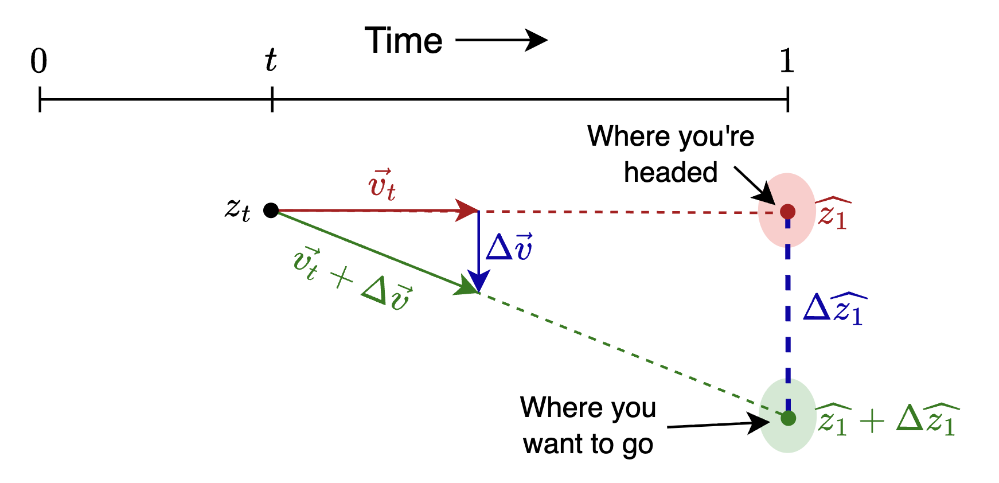
By similar triangles, \(\Delta \widehat{z_1} = (1-t)\Delta \vec{v}\), which means the course correction you want is
\[ \Delta \vec{v} = { \Delta \widehat{z_1} \over 1-t } \tag{2} \]
NoteMathematical Details
Since you’re going to see more math once you try to read the scholarly literature on these topics, let’s go a bit further into the math…
So \(\Delta \widehat{z_1}\) is a measure of the deviation from the desired endpoint. Now, in practical application we won’t actually use the “distance” \(\Delta \widehat{z_1}\), but we’ll use something that functions like a distance, such as a K-L divergence or Mean Squared Error (MSE).
When doing inference, this deviation serves as a “loss” – something we minimize via gradient descent, except we’ll vary the flow positions \(z\) instead of the model weights. More specifically, we’ll consider the “likelihood” \(p( \widehat{z_1} | y )\) of getting a \(z_1\) that matches a given control \(y\), and we’ll seek to maximize that likelihood, or equivalently to minimize the negative log-likelihood.
The expression \(-\nabla_{\widehat{z_1}} \log p( \widehat{z_1} | y )\) essentially answers the question, “In which direction should I adjust \(\widehat{z_1}\) so as to make \(p( \widehat{z_1} | y )\) more likely?” This gives us a direction and a magnitude, which we then multiply by a learning rate “guidance strength” \(\eta\) to turn it into a step size.
Applying this gradient-based approach, our expression for \(\Delta v\) will involve replacing \(\Delta \widehat{z_1}\) in (2) with \(- \eta \nabla_{\widehat{z_1}} \log p( \widehat{z_1} | y\):
\[ \Delta \vec{v} = - \eta {1 \over 1-t } \nabla_{z_t} \log p( \widehat{z_1} | y ) \tag{3} \]
where we used the fact that \(\nabla_{\widehat{z_1}} = \nabla_{z_t}\) (since \(\widehat{z_1} \propto z_t\)). The factor of \(1/(1-t)\) means small corrections suffice early on, but later times require larger adjustments—though other time scalings are possible, as we’ll see.
Now let’s apply this to a concrete example.
4 Classifier Guidance
If we want our model to generate a member of a particular class, we can use an external classifier to examine the generated samples. The constraint to minimize will be the difference between the desired class and the argmax of the classifier output (or some similar relationship that enforces the class compliance).
For our flow model, let’s use Marco Cassar’s winning submission from the 2025 DLAIE Leaderboard Contest on unconditional latent flow matching of MNIST digits. For the classifier, we’ll use the official evaluation classifier from the same contest.
4.1 Setup the Flow Model and Classifier
Let’s generate and draw some sample images.
Code
from torchvision.utils import make_grid
import matplotlib.pyplot as plt
# generate some samples
n_samples = 10
x1 = sub.generate_samples(n_samples=n_samples)
x1.shape
def show_grid(x1, title=None):
if len(x1.shape) == 3: x1 = x1.unsqueeze(1) # add channels dim
grid = make_grid(x1, nrow=10, padding=2, normalize=False)
plt.figure(figsize=(4, 4))
plt.imshow(grid.permute(1, 2, 0).cpu(), cmap='gray')
plt.axis('off')
if title: plt.title(title)
plt.tight_layout()
plt.show()
show_grid(x1, "Sample generated images")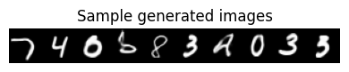
Now let’s setup the (pretrained) classifier we’ll use for the guidance:
Let’s make a plot showing the classifier’s output probabilities (aka likelihoods) across all classes, for all 10 samples. The samples will be the rows, and the class-likelihoods outputs from the classifier will be the columns, where brightness is correlated with likelihood.
Code
def show_probs(probs, x=None):
"""show probs as colormap intensities via imshow.
have each row be a sample and each column be a class probability"""
ncols = 1 if x is None else 2
fig, axs = plt.subplots(1, ncols, figsize=(8, 4))
if ncols == 1: axs = [axs]
if x is not None: # show a little version of the x image for each row
axs[0].imshow(make_grid(x.unsqueeze(1).cpu(), nrow=1, padding=2, normalize=False).permute(1, 2, 0).cpu(), cmap='gray')
axs[0].axis('off')
# show probabilities as an intensity map
im = axs[ncols-1].imshow(probs.cpu(), cmap='gray')
axs[ncols-1].set_xlabel("Class")
axs[ncols-1].set_ylabel("Sample #")
plt.colorbar(im, ax=axs[ncols-1])
plt.tight_layout()
show_probs(probs, x=x1)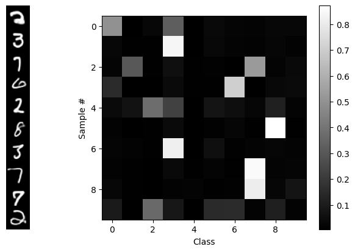
From the “random” distribution of generated digits, we see that this is an unconditional generative model: there’s nothing determining the classes of the outputs – until we add guidance, below! ;-) In a short while, we’ll reproduce that diagram, but we’ll use guidance to get one class per sample, in order, along the diagonal.
To do that, we’re going to have to “break open” the generate_samples routine and even the integrate_path routine to allow us to add a correction to the velocity \(v_t\) generated by the flow model at time \(t\). That correction \(\Delta v\) will be based on the classifier’s output using the projected estimate \(\widehat{x_1}\) of the final data, which we’ll obtain via linear extrapolation.
In our latent space model, we flow with latents \(z\) which must be decoded using the VAE’s decoder \(D\) :
\[ \widehat{z_1} = z_t + (1-t) v_t \] \[ \widehat{x_1} = D(\widehat{z_1}) \]
The correction \(\Delta v\) will generated from a constraint which in this case is just like regular “classifier loss” function in a supervised learning problem. The desired class label is the “target” and the classifier output of the projected estimate is the “prediction”.
Our code will follow this general layout:
loss_fn = torch.nn.CrossEntropyLoss()
v_t = flow_model(z_t, t)
z1_hat = z_t + (1-t)*v_t # projected destination
x1_hat = sub.vae.decoder(z1_hat) # decode it to pixel space
probs = classify(classifier, x1_hat) # classifer operates in pixel space
loss = loss_fn(probs, target) # "supervised learning"
delta_v = magic_function(loss,...???) # <--- here's the part we need to work out
v_t = v_t + delta_v * guidance_strength # we can set the strength of the correctionSo what magic function will turn that loss into a velocity? Well, we can turn to good old Gradient Descent! Except instead of taking the gradient with respect to the model weights like we used to, we’re going to take the gradient with respect to the flow coordinates \(z\) in the latent space, thereby generating a vector in the latent space.
The insight is that PyTorch lets us compute the gradient with respect to anything. We just need to tell it what we want. And we need to be careful to make sure that the VAE and flow models stay frozen, so the only thing that’s allowed to change are the latents \(z\).
The cleanest way to pull this off, code-wise, is to create a function called compute_v() which for starters will just call the flow model, but then we’ll add to it with guidance info:
# wherever we used to just call flow_model(), we'll now call compute_v() instead
@torch.no_grad()
def compute_v(flow_model, z, t, guidance_dict=None, **kwargs):
v_t = flow_model(z, t)
if guidance_dict is not None:
v_t += compute_dv(v_t, z, t, guidance_dict, **kwargs)
return v_t
@torch.enable_grad() # <-- later, this will be a key for getting guidance
def compute_dv(v_t, z, t, g:dict, **kwargs):
"placeholder for now, will add guidance math later"
return torch.zeros_like(v_t).detach() # no correction yet; no gradients returnedWe’ll to use our usual “boilerplate” flow integration code, except we’ll add “**kwargs” everywhere so we can pass controls “all the way in” to the compute_dv() guidance routine, and pair flow_model() as an arg to compute_v() via functools.partial.
Code
# flow integration routines, slightly modified from "flow with what you know" blog
from functools import partial # use partial to package flow_model with compute_v
@torch.no_grad()
def rk4_step(f, y, t, dt, **kwargs): # regular rk4, + kwargs passthrough
# f: callable (y, t) -> dy/dt
k1 = f(y, t, **kwargs)
k2 = f(y + 0.5 * dt * k1, t + 0.5 * dt, **kwargs)
k3 = f(y + 0.5 * dt * k2, t + 0.5 * dt, **kwargs)
k4 = f(y + dt * k3, t + dt, **kwargs)
return y + (dt / 6) * (k1 + 2 * k2 + 2 * k3 + k4)
@torch.no_grad()
def warp_time(t, dt=None, s=.5):
"""Parametric Time Warping: s = slope in the middle.
s=1 is linear time, s < 1 goes slower near the middle, s>1 goes slower near the ends
s = 1.5 gets very close to the "cosine schedule", i.e. (1-cos(pi*t))/2, i.e. sin^2(pi/2*x)"""
if s < 0 or s > 1.5: raise ValueError(f"s={s} is out of bounds.")
tw = 4 * (1 - s) * t ** 3 + 6 * (s - 1) * t ** 2 + (3 - 2 * s) * t
if dt: # warped time-step requested; use derivative
return tw, dt * 12 * (1 - s) * t ** 2 + 12 * (s - 1) * t + (3 - 2 * s)
return tw
@torch.no_grad()
def integrate_path(model, initial_points, step_fn=rk4_step, n_steps=100, warp_fn=None, latent_2d=False, prog_bar=True, t0=0, **kwargs):
p = next(model.parameters())
device, model_dtype = p.device, p.dtype
current_points = initial_points.to(device=device, dtype=model_dtype).clone()
model.eval()
ts = torch.linspace(t0, 1, n_steps, device=device, dtype=model_dtype)
if warp_fn: ts = warp_fn(ts)
if latent_2d: t_batch = torch.empty((current_points.shape[0], 1), device=device, dtype=model_dtype)
vel_model = partial(compute_v, model) # here's the secret sauce
iterator = range(len(ts) - 1)
if prog_bar: iterator = tqdm(iterator, desc="Integrating Path")
for i in iterator:
t, dt = ts[i], ts[i + 1] - ts[i]
if latent_2d: t = t_batch.fill_(t.item())
current_points = step_fn(vel_model, current_points, t, dt, **kwargs)
return current_points
def generate_samples(sub, n_samples: int, n_steps=15, z0=None, t0=0, **kwargs) -> torch.Tensor:
z0 = torch.randn([n_samples, sub.latent_dim]).to(sub.device) if z0 is None else z0
z1 = integrate_path(sub.flow_model, z0, n_steps=n_steps, step_fn=rk4_step, t0=t0, **kwargs)
gen_xhat = F.sigmoid(sub.decode(z1).view(-1, 28, 28))
return gen_xhatNow that we know that works, let’s “supe up” compute_dv() to include the guidance correction. We’ll use the torch.autograd.grad() function to compute the gradient of the loss.
First we have the guidance_dict that we’ll use to pass through our intentions through the various layers of routines to get to compute_dv():
guidance_dict = \
{'classifier': classifier, # the classifier model to use
'decode': sub.decode, # how to decode to pixel space for classifier
'loss_fn': torch.nn.CrossEntropyLoss(reduction='none'), # don't sum over batch dim
'target': torch.arange(10).to(device), # desired class outcomes
'strength': 5.0, # "guidance strength", you may vary this
't_min': 0.01, 't_max': 0.99, # t range to apply guidance, may vary these
}Next we have the fully-equipped compute_dv(). This code is overly-commented to make it easy to follow each step. (We replaced guidance_dict with g locally for brevity.) No other changes to any preceding code are necessary. We’ll be ready to do guided inference after this definition!
@torch.enable_grad() # <-- Needed to compute gradients if calling code has @torch.no_grad()
def compute_dv(v_t, z, t, g:dict, eps=1e-6, debug=False):
"Compute the guidance correction to the flow velocity"
if t < g['t_min'] or t > g['t_max']: return torch.zeros_like(v_t).detach()
z.requires_grad_(True) # need to enable gradient tracking for z
z1_hat = z + (1 - t) * v_t # linear projection to estimated endpoint
# Decoding to pixel space (if decoder provided)
x1_hat = z1_hat if g['decode'] is None else F.sigmoid(g['decode'](z1_hat)).view(-1, 28, 28)
logits, probs = classify(g['classifier'], x1_hat) # run classifier
loss = g['loss_fn'](logits, g['target'][:len(logits)]) # loss <-> "negative log likelihood"
# Compute grad wrt z. "grad_outputs=": don't sum over over batch, keep unique to each datum
grad_z = torch.autograd.grad(loss, z, grad_outputs=torch.ones_like(loss), retain_graph=False)[0]
dv = -grad_z / (1 - t + eps) # - minimizes, (1-t) makes it velocity, eps helps stability
z.requires_grad_(False) # cleanup (z is a tensor so local changes could propagate)
return g['strength'] * dv.detach() # detach so no gradients returnedLet’s go!
torch.manual_seed(0) # for reproducibility as we change other things
with torch.no_grad():
x1 = generate_samples(sub, n_samples=10, guidance_dict=guidance_dict, debug=False)
logits, probs = classify(classifier, x1)
show_probs(probs, x=x1)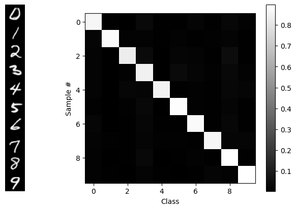
BLAM! Our desired goal: in order, along the diagonal. We see that guidance isn’t perfect, but that’s partially a function of the VAE and the flow model too.
To get a better survey of the capabilities, let’s make a 10x10 grid of outputs with classes along each column:
target = torch.arange(10).repeat(10).to(device) # [0,1,2,..9, 0,1,2,..9, ...]
guidance_dict['target'] = target
torch.manual_seed(42) # (optional) for reproducibility
x1 = generate_samples(sub, n_samples=len(target), guidance_dict=guidance_dict)
show_grid(x1, "Guided samples")
That worked fine, and on a GPU it’s pretty fast, but on a CPU, it’s painfully slow. So instead, let’s…
4.2 Train a Latent Classifier
We’ll train a model z_classifier that looks only in latent space, so we can use it as a guidance signal. This can be a very simple model consisting of a few Linear layers:
class LatentClassNet(nn.Module):
def __init__(self, latent_dim=16, hidden_dim=32, n_classes=10):
super().__init__()
dims = [latent_dim, hidden_dim, hidden_dim, latent_dim, n_classes]
self.layers = nn.ModuleList([nn.Linear(in_d, out_d) for in_d, out_d in zip(dims[:-1], dims[1:])])
def forward(self, z):
for layer in self.layers: z = F.leaky_relu(layer(z))
return z
z_classifier = LatentClassNet().to(device)It will operate on latent encodings of the MNIST dataset. So let’s save the encoded latents to disk and load them into memory. These will be our training and test data.
Code
# You can probably skip this code block. It just runs MNIST
# through the VAE's encoder and saves it to disk.
from torch.utils.data import DataLoader, TensorDataset, Subset
from torchvision.datasets import MNIST
from torchvision.transforms import ToTensor
from glob import glob
import math
@torch.no_grad()
def encode_dataset(vae, dataset, batch_size=512, chunk_size=10000, tag="train"):
"""Encode dataset into VAE latents (z = mu), saving progress in temp chunk files.
We use temp chunks in case execution gets interrupted, we can try again & resume.
"""
device = next(vae.parameters()).device
total_chunks = math.ceil(len(dataset) / chunk_size)
# check for existing chunk files
basename = f"tmp_chunk_{tag}"
chunk_files = glob(basename+'*.pt')
existing_chunks = len(chunk_files)
print(f"{tag}: Found {existing_chunks} of {total_chunks} expected chunks. Generating remaining...")
for c in range(existing_chunks, total_chunks):
print(f"chunk {c+1}/{total_chunks}:",end="")
indices = list(range(c*chunk_size, (c+1)*chunk_size ))
data_subset = Subset(dataset, indices)
loader = DataLoader(data_subset, batch_size=batch_size, shuffle=False)
all_latents, all_labels = [], []
must_flatten = None
with torch.no_grad():
for data, labels in loader:
print("=",end="") # dumb progress bar
x = data.to(device)
# next bit is so it should work with linear layers or conv
if must_flatten is None or must_flatten==False:
try: z, must_flatten = vae.encoder(x), False
except RuntimeError:
z = vae.encoder(x.view(x.size(0), -1))
must_flatten = True
else: z = vae.encoder(x.view(x.size(0), -1))
mu, logvar = z
all_latents.append(mu.cpu())
all_labels.append(labels)
chunk_latents, chunk_labels = torch.cat(all_latents), torch.cat(all_labels)
tmp_filename = f"{basename}_{c+1}.pt"
print(f"| Saving chunk to {tmp_filename}")
torch.save({ 'latents':chunk_latents, 'labels':chunk_labels }, tmp_filename)
# Assemble all the chunks from files and return tensors.
print("Assembling", basename+'*.pt ...')
all_latents, all_labels = [], []
for chunk_file in glob(basename+'*.pt'):
chunk_dict = torch.load(chunk_file, weights_only=True)
all_latents.append(chunk_dict['latents'])
all_labels.append(chunk_dict['labels'])
latents, labels = torch.cat(all_latents), torch.cat(all_labels)
#for f in glob(tmp_file_base+'*.pt'): os.remove(f) # clean up
return latents, labels
def encode_mnist(vae, filename=None, batch_size=512):
print("Acquiring train & test MNIST image datasets...")
train_ds = MNIST(root='./data', train=True, download=True, transform=ToTensor())
test_ds = MNIST(root='./data', train=False, download=True, transform=ToTensor())
print(f"\nEncoding dataset to latents...")
train_latents, train_labels = encode_dataset(vae, train_ds, batch_size=batch_size, tag='train')
test_latents, test_labels = encode_dataset(vae, test_ds, batch_size=batch_size, tag='test')
for f in glob('tmp_chunk_t*_c*.pt'): os.remove(f) # clean up
if filename is not None:
print(f"Saving to {filename} ...")
torch.save({ 'train_z': train_latents, 'test_z': test_latents,
'train_labels': train_labels, 'test_labels': test_labels }, filename)
return train_latents, train_labels
# Encode the dataset
latent_data_filename = 'mnist_latents.pt'
if not os.path.exists(latent_data_filename):
train_latents, train_labels = encode_mnist(sub.vae, filename=latent_data_filename)
def load_data(filename):
if 'MyDrive' in filename:
from google.colab import drive
drive.mount('/content/drive')
data_dict = torch.load(filename, weights_only=True)
return data_dict
data_dict = load_data(latent_data_filename)
train_z, test_z = data_dict['train_z'], data_dict['test_z']
train_z.shape, test_z.shape
# Create datasets from the latent tensors
train_latent_ds = TensorDataset(train_z, data_dict['train_labels'][:train_z.shape[0]])
test_latent_ds = TensorDataset(test_z, data_dict['test_labels'])
batch_size = 512
train_latent_dl = DataLoader(train_latent_ds, batch_size=batch_size, shuffle=True)
test_latent_dl = DataLoader(test_latent_ds, batch_size=batch_size, shuffle=False)
print(f"Train batches: {len(train_latent_dl)}, Test batches: {len(test_latent_dl)}")
# print single latent size
print(f"Latent size: {train_latent_ds[0][0].shape}")Train batches: 118, Test batches: 20
Latent size: torch.Size([16])Then we’ll run the training loop…
Training Loop Code and Execution
# Latent classifier training loop
optimizer = torch.optim.Adam(z_classifier.parameters(), lr=1e-3, weight_decay=1e-5)
criterion = nn.CrossEntropyLoss()
epochs = 8
for epoch in range(epochs):
z_classifier.train()
pbar = tqdm(train_latent_dl, desc=f"Epoch {epoch+1}/{epochs}", leave=False)
for latents, labels in pbar:
optimizer.zero_grad()
logits = z_classifier(latents.to(device))
loss = criterion(logits, labels.to(device))
pbar.set_postfix({'train_loss': f"{loss.item():.4f}"})
loss.backward()
optimizer.step()
# Validation
z_classifier.eval()
val_latents, val_labels = next(iter(test_latent_dl))
val_logits = z_classifier(val_latents.to(device))
val_loss = criterion(val_logits, val_labels.to(device))
val_acc = (val_logits.cpu().argmax(dim=1) == val_labels).float().mean()
print(f"Epoch {epoch+1}/{epochs}: train_loss={loss.item():.4f}, val_loss={val_loss.item():.4f}, val_acc={val_acc.item():.4f}")Epoch 1/8: train_loss=0.9673, val_loss=1.1017, val_acc=0.6211Epoch 2/8: train_loss=0.1901, val_loss=0.1919, val_acc=0.9375Epoch 3/8: train_loss=0.0512, val_loss=0.1205, val_acc=0.9570Epoch 4/8: train_loss=0.1193, val_loss=0.1022, val_acc=0.9668Epoch 5/8: train_loss=0.0810, val_loss=0.0948, val_acc=0.9648Epoch 6/8: train_loss=0.1569, val_loss=0.0815, val_acc=0.9707Epoch 7/8: train_loss=0.0504, val_loss=0.0841, val_acc=0.9629Epoch 8/8: train_loss=0.0408, val_loss=0.0792, val_acc=0.9746Let’s test our newly-trained latent classifier, to make sure it works before trying to use it for guidance. We’ll pull up data samples with known ground-truth “target” labels, and compare these to the predictions from the classifier. If the targets and predictions match up, we’re good to go:
z, L = test_latent_ds[20:30]
z = z.to(device)
show_grid(F.sigmoid(sub.decode(z)).view(-1,28,28))
with torch.no_grad():
pred_class = classify(z_classifier, z, use_argmax=True)
print("Target labels: ",L)
print("Predicted labels:", pred_class.cpu())Target labels: tensor([9, 6, 6, 5, 4, 0, 7, 4, 0, 1])
Predicted labels: tensor([9, 6, 6, 5, 4, 0, 7, 4, 0, 1])Good! They match up. Let’s move on…
4.3 Latents-Only Guidance
Now that we have a trained classifier that operates in latent space, we can run basically the same code as before, only it will execute wayyyyy faster…
Code
guidance_dict ={'classifier': z_classifier,
'decode': None, # no decoding, latent space only
'loss_fn': torch.nn.CrossEntropyLoss(reduction='none'), # don't sum across batch dim
'target': torch.arange(10).repeat(10).to(device),
'strength': 5.0, # "guidance strength"
't_min': 0.01, 't_max': 0.99, }
torch.manual_seed(42) # remove for new samples each time
x1 = generate_samples(sub, n_samples=len(guidance_dict['target']), guidance_dict=guidance_dict)
show_grid(x1, "Latent-Only Guidance")
Was that fast or WHAT?!
Since we no longer have to propagate gradients through the much larger VAE decoder model and pixel-space classifer, we can get answers a lot faster via our small latents-only classifier.
Let’s move on to another application of guidance, for which our guidance signal doesn’t depend on a separate trained (classifier) model at all: inpainting.
5 Inpainting
When inpainting, we have some “mask” inside which some of the data have been removed, and we want to use the model to fill in the missing part in a way that matches with the surrounding pixels. Let’s take a look at an example from MNIST, where we show an original image, the mask (where white=keep, black=remove) and the masked-out image:
Code
# Demo what inpainting looks like
from torchvision.datasets import MNIST
from torchvision.transforms import ToTensor
test_ds = MNIST(root='./data', train=False, download=True, transform=ToTensor())
x = test_ds[7][0]
H, W = x.shape[-2:]
M = torch.ones([H,W], dtype=x.dtype, device=x.device) # 1 = keep pixels
M[H//3:2*H//3, W//3:2*W//3] = 0 # 0 = mask out
x_masked = M*x
show_grid( torch.cat([x, M.unsqueeze(0), x_masked],dim=0)," Original | Mask | Masked Image" )
Another example would be a picture of a face where you’ve blocked out the nose and you want the model to fill in a nose. Now, some of the “filling in” you can get “for free” because the model has only been exposed to data that satisfies the manifold or probability distribution of the training data – e.g. If it was trained on faces, then it only ever saw faces with noses and hence can only generate faces with noses – but the real trick is to do it “well” and have it be “good” in the end. ;-)
There’s a wealth of information on guidance as it was originally applied to diffusion models. Sander Dieleman’s blog post, “Guidance: a cheat code for diffusion models”[8], is a classic and should be read by all. Yet because of the stochastic/random nature of the diffusion path, there are several “complicating” aspects of diffusion guidance that we’re going to gloss over in this tutorial because in the case of deterministic, smooth flow-model trajectories, things become a lot more intuitive.
We’ll follow a method outlined in the paper “Training-free Linear Image Inverses via Flows”[12] by Pokle et al, a method that applies to general linear inverse problems of which inpainting is a particular case, and we’ll simplify their method to adapt it for just inpainting.
The method will be to try to generate an entire new image \(x_1\) that everywhere outside the mask matches up with the pixels in user-supplied (masked) image \(y\). So the constraint will be, given a 2D mask \(M\) (where \(M\)=1 means there’s an original pixel there, and \(M\)=0 is the masked-out region), to require that our estimate image \(\widehat{x_1}\) (i.e. the decoded/pixel version of the estimated latents \(\widehat{z_1}\) ) satisfies \(M*\widehat{x_1} = M* y\,\)1 , or in a “residual form”, we’ll just compute the Mean Squared Error (MSE) of \(M*(\widehat{x_1}-y)\):
\[ {\rm Constraint:} = M^2 * (\widehat{x_1}-y)^2 \] (and if we want, we can use the fact that \(M\) being a binary mask means \(M^2 = M\)).
If we want to do latent-only inpainting (which will be the fastest), then the same constraint applies just with the simplification \(\widehat{x_1} = \widehat{z_1}\)
The authors of the paper recommend only doing guidance from \(t=0.2\) onward because prior to that, it’s hard to make any meaningful estimate.. In fact, they don’t even integrate before \(t = 0.2\). They just interpolate between the source and the target data to get their starting point at \(t = 0.2\).
To use our constraint in the guidance equation (3) for computing \(\Delta v\,\), we’ll need to turn our constraint into a likelihood by raising it to an exponential power – so we get a Gaussian! But the guidance equation includes a logarithm that immediately undoes our exponentiation:
\[ \Delta v = - {\eta \over 1-t} \nabla_{z_t} \ \,{\color{red}{\text{l̸o̸g̸}\,\text{e̸x̸p̸}}} \left( M^2 * (\widehat{x_1}-y)^2 \right) .\]
The gradient part is \[ \nabla_{z_t} M^2 *(\widehat{x_1}-y)^2 = 2M^2*(\widehat{x_1}-y) {\partial \widehat{x_1} \over \partial z_t } \]
If we’re inpainting in latent space and not using the decoder for the constraint, then \({\partial \widehat{x_1} / \partial z_t } = 1\). Otherwise that term will require evaluation via PyTorch’s autograd (=slow).
Our earlier time scaling was \(1/(1-t)\); turns out that doesn’t work very well in practice when it comes to inpainting. Instead, we’ll use a different time scaling that delivers good (albeit not perfect) results: \((1-t)/t\). Thus our full equation for the velocity correction will be:
\[ \Delta \vec{v} = -\eta {1-t\over t} M^2 *(\widehat{x_1} - y){\partial\widehat{x_1}\over\partial{z_t}}, \] where we absorbed the factor of 2 into \(\eta\), and the last partial derivative term can be one if we do latent-only inpainting.
Let’s implement this in code, using two different versions of the gradient calculation, depending on whether we can do it all in latent space or if we need to propagate gradients through the decoder:
Code
@torch.no_grad() # gradients computed analytically!
def ip_latents_grad(v_t, z, t, g:dict, eps=1e-6, **kwargs):
"inpainting gradients for latent-only guidance, fast"
z1_hat = z + (1-t)*v_t
return g['M_sq'] * (z1_hat - g['y']) # x1_hat = z1_hat, dz1_hat/dz_t=1
@torch.enable_grad()
def ip_pixels_grad(v_t, z, t, g:dict, eps=1e-6, img_size=(28,28), **kwargs):
"inpainting gradients for pixel-space guidance. needs decoder & tracks via autograd, = slow"
z.requires_grad_(True)
z1_hat = z + (1-t)*v_t
x1_hat = F.sigmoid(g['decode'](z1_hat)).view(-1,1, *img_size)
grad_x = g['M_sq'] * (x1_hat - g['y'])
grad_z = torch.autograd.grad(x1_hat, z, grad_outputs=grad_x,retain_graph=False)[0] # mults grad_x by dx1_hat/dz1_hat
z.requires_grad_(False)
return grad_z.detach() # don't send gradients onward
def t_timescale(t, choice='mine'):
"our choice for adaptive time scale"
if choice =='simple': return 1/(1-t) # our earlier scale; doesn't work
elif choice=='pokle':
return (1-t)**2 / ((1-t)**2 + t**2) # from pokle et al; can't get it to work
elif choice=='constant': return 4 # or any constant. The 4 is from Pokle et al
else: return (1-t)/t # Works pretty well! Strong guidance at start, zero at end
def compute_dv_inpainting(v_t, z, t, g:dict, **kwargs):
"wrapper to call appropriate gradient-computation routine"
if t < g['t_min'] or t > g['t_max']: return torch.zeros_like(v_t)
grad_fn = ip_latents_grad if g['decode'] is None else ip_pixels_grad
grad = grad_fn(v_t, z, t, g, **kwargs)
dv = -g['strength'] * t_timescale(t) * grad
return dv.detach()5.1 Do the Inpainting
Start with masked images \(y\)…
Code
# setup the data
y = torch.stack([test_ds[i][0] for i in range(50)])
print(y.shape)
y = M*y
show_grid(y.squeeze(), "Masked Images")torch.Size([50, 1, 28, 28])
And now we run the inpainting code
Code
compute_dv = compute_dv_inpainting # register our new guidance routine
inpainting_dict ={'decode': sub.decode, # how to decode to pixel space for classifier
'M_sq': (M**2).to(device),
'y': y.to(device),
'strength': 1.0, # "guidance strength", you may vary this
't_min': 0.2, 't_max': 0.999} # t range to apply guidance, may vary these
with torch.no_grad():
torch.manual_seed(0) # for reproducibility as we change other things
t0 = 0.2 # starting time as per Pokle et al
z0 = torch.randn([len(y), sub.latent_dim]).to(sub.device)
zy = sub.encode(y.to(device)) # encoded version of masked image
z0 = z0 * (1-t0) + zy * t0 # interpolation init
inpainting_dict['t_min'] = t0
x1 = generate_samples(sub, n_samples=len(y), t0=t0, z0=z0, guidance_dict=inpainting_dict, warp_fn=None, debug=False)
show_grid(y.squeeze(), "Masked Images")
show_grid(x1, "Inpainted Images") 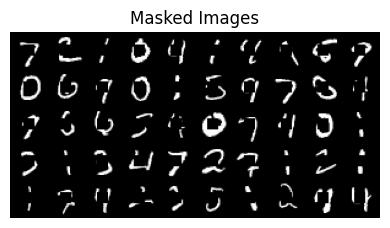
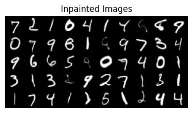
We see that the generated images generally look great, although in some cases, the in-painting code has changed pixels even where the mask is 1. We can disallow this by just resetting those values to the pixels in \(y\).
Turning up the guidance strength would also enforce our constraint better, but turning up too high causes the whole thing to diverge and we get garbage out.
In order to experiment with other methods more easily, we should do inpainting only in latent space, and for that we will need a model that supports spatial latents….
5.2 Latent-Only Inpainting
To do inpainting in latent space, we’ll need to switch models to one where the latents preserve the spatial structure of the original images.
Get the spatial-latents model
# Get Spatial VAE & FLow DiT Model
!wget -q --no-clobber=off https://raw.githubusercontent.com/dlaieburner/2025-leaderboard/refs/heads/main/sample_submission_dit.py
try:
del SubmissionInterface # remove Marco's from earlier; make it reload
except NameError:
pass # nevermind
from sample_submission_dit import SubmissionInterface
sub = SubmissionInterface().to(device)device = mpsDownloading...
From: https://drive.google.com/uc?id=1kPK3ZPadOUEfH8ZycrG3k27pl9-lGUeL
To: /Users/shawley/github/blog/posts/downloaded_vae.safetensors
100%|████████████████████████████████████████████████████████████████████████████████| 12.6M/12.6M [00:00<00:00, 13.5MB/s]
Downloading...
From: https://drive.google.com/uc?id=1q9Iguf--2_MqUjsosS7iAGGzYtVfJ3UF
To: /Users/shawley/github/blog/posts/downloaded_flow.safetensors
100%|████████████████████████████████████████████████████████████████████████████████| 34.1M/34.1M [00:02<00:00, 16.7MB/s]
0%| | 0.00/12.6M [00:00<?, ?B/s] 4%|▍ | 524k/12.6M [00:00<00:02, 4.41MB/s] 25%|██▌ | 3.15M/12.6M [00:00<00:00, 16.1MB/s] 46%|████▌ | 5.77M/12.6M [00:00<00:00, 18.5MB/s] 79%|███████▉ | 9.96M/12.6M [00:00<00:00, 26.8MB/s]100%|██████████| 12.6M/12.6M [00:00<00:00, 24.0MB/s]
Downloading...
From: https://drive.google.com/uc?id=1q9Iguf--2_MqUjsosS7iAGGzYtVfJ3UF
To: /Users/shawley/github/blog/posts/downloaded_flow.safetensors
0%| | 0.00/34.1M [00:00<?, ?B/s] 2%|▏ | 524k/34.1M [00:00<00:08, 4.17MB/s] 11%|█ | 3.67M/34.1M [00:00<00:01, 17.3MB/s] 22%|██▏ | 7.34M/34.1M [00:00<00:01, 24.7MB/s] 29%|██▉ | 9.96M/34.1M [00:00<00:01, 23.2MB/s] 42%|████▏ | 14.2M/34.1M [00:00<00:00, 29.2MB/s] 52%|█████▏ | 17.8M/34.1M [00:00<00:00, 30.8MB/s] 63%|██████▎ | 21.5M/34.1M [00:00<00:00, 31.3MB/s] 74%|███████▍ | 25.2M/34.1M [00:00<00:00, 30.3MB/s] 85%|████████▍ | 28.8M/34.1M [00:01<00:00, 31.0MB/s] 95%|█████████▌| 32.5M/34.1M [00:01<00:00, 32.1MB/s]100%|██████████| 34.1M/34.1M [00:01<00:00, 28.7MB/s]Let’s take a look at the images and their spatial-latent representations:
Code
# viz images and spatial latents
from torchvision.datasets import MNIST
test_ds = MNIST(root='./data', train=False, download=True, transform=ToTensor())
x = torch.stack([test_ds[i][0] for i in range(6)])
if len(x.shape) < 4: x1 = x.unsqueeze(1)
show_grid(x, "Images")
z1 = sub.encode(x)
show_grid((z1-z1.min())/(z1.max()-z1.min()), "Latents")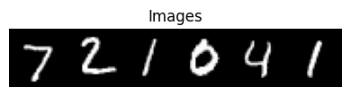
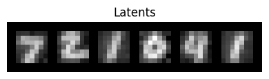
def prepare_latent_mask(image, mask, encoder):
z_y = encoder(image.to(device))
M_z = F.interpolate(mask[None, None], size=z_y.shape[-2:], mode='bilinear', align_corners=False).to(device)
M_z = (M_z > 0.9).float() # binarize it
return z_y * M_z, M_z**2
@torch.no_grad()
def latents_only_inpaint(sub, inpainting_dict, n_samples, n_steps=20, t0=0.2, warp_fn=None):
z_y, M_sq = prepare_latent_mask(y, M, sub.encode)
inpainting_dict.update({'M_sq': M_sq, 'y': z_y, 't_min': t0})
z0 = torch.randn_like(z_y) * (1-t0) + z_y * t0 # Initialize via interpolation
return generate_samples(sub, n_samples, t0=t0, z0=z0, guidance_dict=inpainting_dict, warp_fn=warp_fn)
inpainting_dict ={'decode': None, # now we're latents-only
'strength': 1.0, # "guidance strength", you may vary this
't_min': 0.2, 't_max': 0.999} # t range to apply guidance, may vary these
show_grid(y.squeeze(), "pixel y's")
x1 = latents_only_inpaint(sub, inpainting_dict, n_samples=len(y), n_steps=10)
print()
show_grid(x1, "inpainted images")
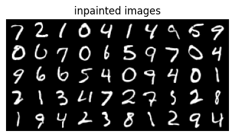
Notice the execution speed!
There are some limitations to what’s being produced. The problem is due to the low resolution of our latents. Inpainting algorithms typically assume higher resolution in order to work accurately. But this lesson was designed to run quickly on CPUs and thus there is a trade-off.
Now, if we want to enforce the original pixels where the mask is one, we can do that at every stage of the integration process. We just need to modify the integration process to overwrite \(z\) wherever Mz is 1.
Let’s move on and try a different method that can achieve similar results, albiet differently…
6 PnP-Flow: Guidance By Another Name
The term ‘guidance’ typically refers to velocity modifications, but PnP-Flow by Martin et al[13] achieves similar results by adjusting latent positions \(z\) directly.2\(^,\)3
PnP-Flow assumes straight-line trajectories, making the forward projection trivial: \(\widehat{z_1}\) is reached by simple linear extrapolation. Instead of incrementally moving \(z\) from \(t=0\) to \(t=1\), PnP-Flow projects forward to \(\widehat{z_1}\) and iterates on that estimate through a series of correction and projection steps. The first step applies our gradient correction:
\[{\rm Step\ 1.}\ \ \ \ \ \ \ \ \ \ \ \ z_1^* := \widehat{z_1} - \eta\,\gamma_t \nabla F(\widehat{z_1},y)\]
where \(z_1^*\) (my notation) is our goal i.e. the endpoint of our projected course correction, and \(F(\widehat{z_1},y)\) is our (log-exp probability) constraint. For the time scaling, the PnP-Flow authors recommend \(\gamma_t = (1-t)^\alpha\) with \(\alpha \in [0,1]\) is a hyperparameter chosen according to the task – e.g., they use \(\alpha\)’s as large as 0.8 for denoising tasks, 0.5 for box inpainting, and 0.01 for random inpainting. This choice of \(\gamma_t\) is a bit different from our earlier one of \((1-t)/t\). Both go to zero as \(t \rightarrow 1\), but approach it differently and have different asymptotics as \(t\rightarrow 0\).
In the graph below, we show our earlier choice of \((1 - t)/t\) in green and \((1 - t)^\alpha\) in purple for various choices of \(\alpha\):
…where for “box inpainting” as we did above, they use \(\alpha\)=0.5.
But PnP-Flow doesn’t stop there! Two other key steps remain. We then project backward to overwrite \(z_t\) with a corrected value:
\[{\rm Step\ 2.}\ \ \ \ \ \ \ \ \ \ \ \ z_t := (1-t)\,z_0 + t\, z_1^* \]
We then compute a new projected estimate, same as we have before:
\[{\rm Step\ 3.}\ \ \ \ \ \ \widehat{z_1} := z_t + (1-t)\,v_t(z,t)\]
….and loop over Steps 1 to 3 for each value of \(t\) in our set of (discrete) integration steps, i.e. after Step 3, we let \(t := t+\Delta\,t\) and go back to Step 1. Our final value of \(\widehat{z_1}\) will be the output.
This image from the PnP-Flow paper may prove instructive, showing 3 different instances of the 3 PNP steps:
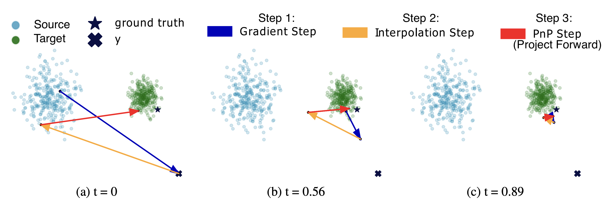
This has a superficial resemblance to the “ping-pong” integration method used by the flow model Stable Audio Open Small (SAOS) [14], with a key distinction: the ping-pong integrator and updates the time-integrated latent variable \(z\) (called “\(x\)” in SAOS), whereas for PnP-Flow it is the projection \(\widehat{z_1}\) (called “denoised” in SAOS) that is the primary variable that is maintained between steps. This is a subtle distinction but worth noting.4
To implement PnP-Flow in code, let’s replace our “integrator” with something specific to PnP-Flow:
@torch.no_grad()
def sample_pnpflow(model, z0, n_steps=10, alpha=0.5, n_avg=5, warp_fn=lambda x: x, guidance_dict=None):
ts = warp_fn(torch.linspace(0, 1, n_steps, device=z0.device, dtype=z0.dtype))
z1_hat = z0
for t in ts[1:]:
grad = guidance_dict['M_sq'] * (z1_hat - guidance_dict['y'])
gamma_t = (1 - t) ** alpha
z1_star = z1_hat - guidance_dict['strength'] * gamma_t * grad
projections = [] # Average multiple noisy projections
for _ in range(n_avg):
z = t * z1_star + (1 - t) * torch.randn_like(z1_star)
projections.append(z + (1 - t) * model(z, t))
z1_hat = torch.stack(projections).mean(dim=0)
return z1_hatThe model we used earlier for latents-only inpainting was trained to have straight trajectories, so we should be able to use it again here, just calling sample_pnpflow (instead of integrate_path). The results are as follows:
Code
@torch.no_grad()
def pnp_flow_inpaint(sub, inpainting_dict, n_samples, n_steps=10, t0=0, seed=None, **kwargs):
"""Inpaint using PnP-Flow method"""
if seed is not None: torch.manual_seed(seed)
z_y, M_sq = prepare_latent_mask(y, M, sub.encode)
inpainting_dict.update({'M_sq': M_sq, 'y': z_y, 't_min': t0})
z0 = torch.randn_like(z_y) * (1-t0) + z_y * t0
return sample_pnpflow(sub.flow_model, z0, guidance_dict=inpainting_dict, **kwargs)
inpainting_dict = {'strength': 1.0, 't_min': 0.0, 't_max': 0.999}
show_grid(y,"Masked pixel images (y)")
z1 = pnp_flow_inpaint(sub, inpainting_dict, n_samples=len(y), n_steps=20, alpha=0.5, seed=0)
x1 = F.sigmoid(sub.decode(z1)).cpu() # convert latents to pixels
show_grid(x1, f"Inpainted images (alpha=0.5, strength={inpainting_dict['strength']})")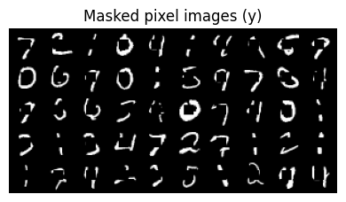
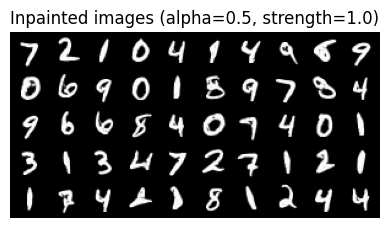
…So that works, though it also seems to “take some liberties”: most of the letters in the second group look like “boldface” versions of the top ones. This could be because of the low spatial resolution of the latents, e.g. that they are encoding information about curvature or other aspects of the shape.
The results are similar to the previous inpainting method of Pokle et al, just a different way of doing it that may prove worthwhile.
PnP-Flow is a general guidance method not limited to inpainting or even “linear” image degradations. I recommend looking into it further for other tasks and datasets — and let me know what sort of results you find!
7 Summary
Training new models is expensive—lots of data, electricity, compute time. So what if you could take a pretrained model and add controls at inference time instead? That’s what this tutorial explored. While similar ideas are emerging for steering autoregressive models [16], here we focused on pretrained flow models.
The key idea is simple: at each integration step, you project forward to estimate where you’ll end up (\(\,\widehat{z_1}\,\)) , check how far that is from where you want to be, and add a small velocity correction to steer toward your goal. We applied this to an unconditional MNIST flow model for two tasks: generating specific digit classes via classifier guidance, and filling in masked-out regions via inpainting.
We looked at four approaches. First, standard classifier guidance in pixel space—it works but it’s slow because you’re propagating gradients through the VAE decoder. Second, we trained a simple latent-space classifier and did the same thing much faster. Third, we implemented the linear inpainting method from Pokle et al, which operates directly on latents. Fourth, we tried PnP-Flow, which achieves guidance not by correcting velocities but by iteratively projecting samples forward and backward in time.
The math here is much simpler than the corresponding diffusion methods because flow trajectories are smooth and deterministic. We’ve glossed over a lot of detail compared to the research papers, but hopefully this gives you enough to experiment with your own controls. There are limits to the effectiveness of guidance: small models that don’t generalize well won’t suddenly work miracles if you try to push them too far outside their training distribution. Nevertheless, these plugin methods are worth exploring as accessible ways to steer generative flows where you want them to go.
8 Acknowledgements
This work was supported by Hyperstate Music, Inc. who are awesome and you should invest in them! ;-) For providing feedback on early drafts of this tutorial: thanks to Raymond Fan, Alan Lockett, and my amazing students in PHY/DSC/BSA 4420, “Deep Learning and AI Ethics”! Also thanks to Danilo Comminiello and the signal processing group at Sapienza University of Rome for encouraging me to present a preceding lecture [5] at IJCNN 2025 – this blog post is the missing piece!
This document was partially prepared using the SolveIt platform of Answer.ai and via many discussions with Claude.ai; still overwhelmingly authored by the hands of this here human.
9 References
[1]
J. Ho, “Classifier-free diffusion guidance,” ArXiv, vol. abs/2207.12598, 2022, Available: https://arxiv.org/abs/2207.12598
[2]
Y. Lipman, R. T. Q. Chen, H. Ben-Hamu, M. Nickel, and M. Le, “Flow matching for generative modeling,” in The Eleventh International Conference on Learning Representations (ICLR), 2023. Available: https://openreview.net/forum?id=PqvMRDCJT9t
[3]
X. Liu, C. Gong, and Q. Liu, “Flow straight and fast: Learning to generate and transfer data with rectified flow,” in 11th International Conference on Learning Representations (ICLR), 2023. Available: https://openreview.net/forum?id=XVjTT1nw5z
[4]
S. H. Hawley, “Flow with what you know,” in The Fourth Blogpost Track at ICLR, 2025. Available: https://iclr-blogposts.github.io/2025/blog/flow-with-what-you-know/
[5]
S. H. Hawley, “Practical guide to developing flow-based generative models,” in International Joint Conference on Neural Networks (IJCNN), 2025. Available: https://hedges.belmont.edu/IJCNN_Practical_Flow_Dev.pdf
[6]
G. Daras et al., “A survey on diffusion models for inverse problems.” 2024. Available: https://arxiv.org/abs/2410.00083
[7]
H. Ye et al., “TFG: Unified training-free guidance for diffusion models,” Advances in Neural Information Processing Systems, vol. 37, pp. 22370–22417, 2024, Available: https://arxiv.org/abs/2409.15761
[8]
S. Dieleman, “Guidance: A cheat code for diffusion models.” 2022. Available: https://benanne.github.io/2022/05/26/guidance.html
[9]
Z. W. Blasingame and C. Liu, “Greed is good: Guided generation from a greedy perspective,” in Frontiers in probabilistic inference: Learning meets sampling, 2025. Available: https://openreview.net/forum?id=o4yQzZ5qCW
[10]
S. Dieleman, “Generative modelling in latent space.” 2025. Available: https://sander.ai/2025/04/15/latents.html
[11]
A. Tong et al., “Improving and generalizing flow-based generative models with minibatch optimal transport,” Transactions on Machine Learning Research, 2024, Available: https://openreview.net/forum?id=CD9Snc73AW
[12]
A. Pokle, M. J. Muckley, R. T. Q. Chen, and B. Karrer, “Training-free linear image inverses via flows,” Transactions on Machine Learning Research, 2024, Available: https://openreview.net/forum?id=PLIt3a4yTm
[13]
S. Martin, A. Gagneux, P. Hagemann, and G. Steidl, “PnP-flow: Plug-and-play image restoration with flow matching.” 2024. Available: https://arxiv.org/abs/2410.02423
[14]
Z. Novack et al., “Fast text-to-audio generation with adversarial post-training,” in IEEE workshop on applications of signal processing to audio and acoustics (WASPAA), 2025. Available: https://arxiv.org/abs/2505.08175
[15]
Z. Novack, J. McAuley, T. Berg-Kirkpatrick, and N. J. Bryan, “DITTO: Diffusion inference-time t-optimization for music generation,” in Forty-first International Conference on Machine Learning (ICML), 2024. Available: https://openreview.net/forum?id=z5Ux2u6t7U
[16]
D. Zhao, D. Beaglehole, T. Berg-Kirkpatrick, J. McAuley, and Z. Novack, “Steering autoregressive music generation with recursive feature machines.” 2025. Available: https://arxiv.org/abs/2510.19127
If you found this tutorial helpful, I encourage you to cite it:
@misc{hawley2025flowwhere,
title={Flow Where You Want},
author={Scott H. Hawley},
date={Nov 27, 2025},
howpublished={Scott Hawley's Blog},
url={https://drscotthawley.github.io/blog/posts/FlowWhereYouWant.html}
}Footnotes
where “\(*\)” denotes the elementwise or Hadamard product↩︎
The paper by Pokle et al we cited earlier also included a related method, however the PnP-Flow method is a bit more general and the PnP-Flow paper is muuuch more readable than Pokle et al! (The reviewer comments of the latter are extensive – glad it wasn’t just me who struggled!) ;-) Plus, Anne Gagneux provided code for PnP-Flow! Gagneux’s repo even provides code for the position-only (non-velocity) algorithm from Pokle et al aka “OT-ODE”.↩︎
Differences between our variables and those in the PnP-Flow paper: For us, \(z\) are integrated flow latent variables between \(z_0\) (source) and \(z_1\) (target), whereas \(x\) are the pixel-space representations via our VAE’s decoder \(D\) such that \(D(z)=x\). In PnP-Flow, \(x\) is the integrated flow variable, \(z\) is used only for their interpolation/overwrite step, and \(D\) is the “denoiser” aka their flow model.↩︎
In keeping with the “Zack Novack” theme: the trivial nature of integration for near-OT paths of flow models means that one can implement a flow version of DITTO [15] that avoids the expensive back-integration needed for diffusion models. The result is also superficially similar to PnP-Flow, but with gradient steps applied to \(z\) instead of \(\widehat{z_1}\).↩︎